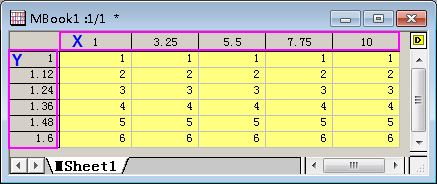
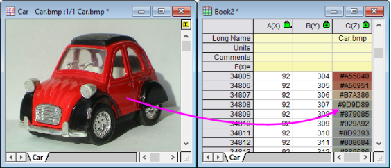

Matrixmappen, Matrixblätter und Matrixobjekte
Matrix-Book-Matrix-Sheet-Matrix-Objects
Matrixmappen, Matrixblätter und Matrixobjekte
Eine Matrix ist ein Datensatz von in Spalten und Zeilen angeordneten Z-Werten, die die X- und Y-Werte linear abbilden. Einschränkungen, Matrix Die folgende Tabelle fasst einige wichtige Einschränkungen der Matrixmappen zusammen:
| Maximale Anzahl von... |
32Bit-Betriebssystem |
64Bit-Betriebssystem |
|
Matrixblätter in einer Matrixmappe
Matrixobjekte in einem Matrixblatt
Zellen in einer Matrix (Notiz)
|
1024†
65,527
90,000,000
|
1024†
65,527
90,000,000
|
† > 255 Blätter erfordern das Speichern der Datei in einem Unicode-Dateiformat (z. B. *.opju). Unicode-Formate sind nicht mit Origin-Versionen vor Origin 2018 SR0 kompatibel.
| Hinweis: Das Produkt aus einer beliebigen Kombination der Zeilen und Spalten darf nicht größer sein als 90.000.000. |
Matrixmappen, Matrixblätter und Matrixobjekte benennen
Matrixmappen benennen Matrixmappen, Benennen Matrixblätter, Benennen Matrixblätter benennen Matrixobjekte, Benennen Matrixobjekte benennen
| Matrixmappe |
- Die Matrixmappe hat einen Kurznamen, unabhängig davon, ob Sie ihn anzeigen oder nicht. Origin verwendet den Kurznamen für interne Operationen.
- Kurznamen müssen innerhalb der Projektdatei einzigartig sein, können keine Leerzeichen enthalten, müssen mit einem Buchstaben beginnen, bestehen nur aus alphanumerischen Zeichen (A bis Z und 0 bis 9) und sind auf 13 Zeichen beschränkt. Sie können Kleinbuchstaben verwenden. Der Text wird entsprechend angezeigt. Allerdings stellen ist der Unterschied von Klein- und Großbuchstaben kein Merkmal für Einzigartigkeit der Zeichen dar. (Sie können nicht eine Matrix MBOOK1 und eine andere mbook1 nennen.)
- Langnamen sind optional, müssen nicht innerhalb der Projektdatei einzigartig sein, können Leerzeichen enthalten, können mit einem Buchstaben, einer Zahl oder einem Sonderzeichen beginnen und ihre Länge kann bis zu 520 Zeichen (einschließlich Leerzeichen) betragen.
|
| Matrixblätter |
- Der Blattname muss innerhalb der Matrixmappe einzigartig sein und ist auf 32 Zeichen beschränkt.
- Kann Leerzeichen und Zahlen enthalten.
- Kann Sonderzeichen enthalten außer `!%"|()[]{}<>.
- Kann mit einem Buchstaben, einer Zahl oder einem zugelassenen Sonderzeichen beginnen.
- Optional kann das Blatt eine Beschriftung und Kommentare haben.
|
| Matrixobjekte |
- Standardmäßig weist Origin jedem Matrixobjekt eine Indexnummer zu, sobald es erstellt wird. Diese Indexnummer kann nicht geändert werden.
- Sie können dem Objekt einen Namen geben, indem Sie in der oberen rechten Ecke des Matrixblatts auf das gelbe Objektsymbol klicken -
 für eine Datenmatrix oder für eine Datenmatrix oder  für eine Bildmatrix - und Umbenennen im Menü wählen. Alternativ können Sie doppelt auf die/den Matrixobjektnummer/-namen unter dem Miniaturbild klicken und einen Namen eingeben. für eine Bildmatrix - und Umbenennen im Menü wählen. Alternativ können Sie doppelt auf die/den Matrixobjektnummer/-namen unter dem Miniaturbild klicken und einen Namen eingeben.
|
Unterschiedliche Ansichten der Matrix
Matrix, Datenmodus vs. Bildmodus ROI (Region of Interest) Bilder, Matrix In dem Arbeitsblatt ist ein Datensatz in einer einzelnen Spalte enthalten. Der Datensatz kann aus X-,Y-,Z-, Fehler- oder Beschriftungsdaten bestehen. In der Origin-Matrix wird ein Datensatz in einer speziellen Dimension von Zeilen und Spalten angeordnet. Die Matrix enthält einen einzelnen Datensatz aus Z-Werten.
- Matrixspalten sind in linear verteilten X-Werten abgebildet.
- Matrixzeilen sind in linear verteilten Y-Werten abgebildet.
Beachten Sie, dass das Matrixfenster über zwei Ansichtsmodi der Spalten- und Zeilenüberschriften verfügt:
- Standardmäßig erscheinen die Überschriften der Matrixzeilen und -spalten als Indexnummern (Ansicht: Spalte/Zeile zeigen im Menü oder drücken Sie Strg+Shift+C).
- Sie können die X- und Y-Werte von Matrixzeilen und -spalten auch anzeigen, indem Sie den Befehl Ansicht: X/Y zeigen im Origin-Menü wählen (oder Strg+Shift+X drücken). Die angezeigten X- und Y-Werte sind X- und Y-Koordinatenwerte, die durch lineare Interpolation der Achsenwerte Von und Bis nach Anzahl der Spalten und Zeilen berechnet werden.
Zusätzlich zu den beiden Ansichtsmodi für Zeilen-/Spaltenüberschriftgen gibt es zwei Matrixanzeigemodi:
- Im Datenmodus (Ansicht: Datenmodus im Menü oder durch Drücken von Strg+Shift+D) wird das Matrixobjekt als Rohzahlen angezeigt.
- Im Bildmodus (Ansicht: Bildmodus im Menü oder durch Drücken von Strg+Shift+I) wird das Matrixobjekt abhängig vom Datentyp in der Matrix entweder als graustufiges oder farbiges Bild angezeigt. Eine Matrix bestehend aus reellen oder komplexen Zahlen wird als graustufiges Bild angezeigt, während RGB-Werte als farbiges Bild angezeigt werden.
| Hinweis: Wenn das Matrixobjekt ein Bild ist, wird das Objektsymbol als angezeigt, egal, ob Sie das Matrixobjekt als Bild (Ansicht: Bildmodus) ansehen oder als Daten (Ansicht: Datenmodus). Entsprechend wird das Objektsymbol unabhängig vom Ansichtsmodus als angezeigt, wenn Sie numerische Daten in die Matrix importieren. |
Matrixmappen
Matrixobjekte Wie das Arbeitsmappenfenster wird das Matrixmappenfenster aus einer benutzerdefinierbaren Vorlage (.otmu-Datei) erstellt. Die Vorlage der Matrixmappe speichert neben anderen Dingen die Anzahl der Blätter in der Mappe, die Namen der Matrixblätter, die Matrixdimensionen, den Datentyp, die mathematischen Funktionen, die Handhabung des Datenimports sowie verschiedene Stil- und Formatierungsoptionen.
Wenn Sie eine neue Matrixmappe erstellen, erhält die Mappe den Namen MBookN, wobei N die Reihenfolge der Fenstererstellung wiedergibt. An den Mappennamen angehängt sehen Sie eine Angabe wie beispielsweise ":1/3". Die erste ganze Zahl bezeichnet hierbei das aktive Matrixobjekt und die zweite die Anzahl der Matrixobjekte im aktiven Matrixblatt. Dem obenstehenden Beispiel folgend zeigt das Menü drei Matrixobjekte, von denen das erste das aktive Objekt ist - das mit dem Häkchen gekennzeichnete -, wenn Sie auf das gelbe Objektsymbol auf der rechten Seite der Matrix klicken (beachten Sie, dass in der Abbildung die Objekte leer sind).
 | Sie können mit der rechten Maustaste auf einen Arbeitsblattreiter klicken und Matrix als Blatt hinzufügen wählen, um eine Matrixmappe in eine Arbeitsmappe einzufügen. Dies ist nützlich beim Erstellen von Analysevorlagen, die matrix-basierte Operationen einschließen, wie 3D-Oberflächenanpassung oder 3D-Zeichenoperationen.
|
Matrixblätter
| Vor Origin 2018 konnte eine Origin-Matrixmappe maximal 255 Arbeitsblätter beinhalten. Diese Anzahl wurde nun auf 1024 erhöht. Wenn Sie mehr als 255 Blätter in einer Mappe haben, müssen Sie Ihre Datei mit Hilfe der neuen Unicode-kompatiblen Formate (opju, ogmu etc.) speichern. |
Eine Matrixmappe kann bis zu 1024 Matrixblätter umfassen. Die Standardvorlage einer Matrixmappe - ORIGIN.otmu - verfügt über ein einzelnes Matrixblatt, das 32 Zeilen und 32 Spalten enthält. Jedes Matrixblatt kann sich bezüglich der Dimensionen unterscheiden (Anzahl der Zeilen und Spalten und X/Y-Bereich).
Um die Dimensionen des Matrixblatts festzulegen:
- Klicken Sie auf eine Registerkarte, um das Blatt zu aktivieren, und wählen Sie Matrix: Dimensionen/Beschriftungen festlegen. Der Dialog Matrixdimensionen und Beschriftungen wird geöffnet.
- Legen Sie eine Anzahl von Spalten (X-Dimension) und Zeilen (Y-Dimension) fest.
- Legen Sie einen Wert für Von und Bis für X (Spalten) und Y (Zeilen) fest.
| Hinweis: Die X- und Y-Koordinaten der Matrix sind äquidistant verteilt. Das erste X wird in der ersten Matrixspalte abgebildet und das letzte X in der letzten Matrixspalte. Die X-Koordinaten der anderen Spalten werden interpoliert. Matrixzeilen werden auf ähnliche Weise mit Hilfe der Y-Werte Von und Bis abgebildet . Beim Zeichnen und Analysieren von Matrixdaten wird die Position eines Punkts im 3D-Raum durch die X- und Y-Koordinatenwerte für Spalte bzw. Zeile bestimmt (nicht Spalten- oder Zeilenindex) und den Z-Wert der Zelle, bei der sich Zeile und Spalte überschneiden. |
Matrixobjekte
Ein Matrixblatt kann bis zu 65.504 Matrixobjekte enthalten, die tatsächliche Anzahl ist aber wahrscheinlich viel kleiner (aufgrund der verfügbaren Systemressourcen). Objekte in einem Blatt teilen die gleichen X/Y-Dimensionen und Header für Spalten (X) und Zeilen (Y), aber jedes Objekt kann über seinen eigenen Z-Header verfügen. Andere Eigenschaften des Matrixobjekts umfassen interne Optionen für den Datentyp und die numerische Anzeige.
Die Eigenschaften des Matrixobjekts werden über die Bedienoberfläche im Dialog Matrixeigenschaften festgelegt. Um den Dialog zu öffnen:
- Stellen Sie sicher, dass das Matrixobjekt aktiv ist (nebenstehendes Häkchen im Menü Objekt).
- Wählen Sie Matrix: Eigenschaften setzen im Origin-Menü.
| Sie können die Eigenschaften für mehrere Matrixobjekte festlegen, ohne den Dialog Matrixeigenschaften zu schließen, indem Sie die Schaltflächen << Vorheriges und Nächstes >> oben im Dialog verwenden.
|
Bild in Matrix importieren
Origin hat zwei Strukturen zum Importieren von Bildern mit mehreren Frames -- das Matrixfenster und das Bildfenster. Das Matrixfenster ist besser geeignet, um Analyseaufgaben (z. B. Oberflächenanpassung, Statistik, mathematische Transformationen der Daten etc.) und einige grafische Operationen durchzuführen, aber beachten Sie Folgendes:
- Wenn Sie ein Bild in die Matrix importieren, können Sie -- wie mit anderen Matrixdaten -- zwischen den "Datenmodus" (Ansicht: Datenmodus) und "Bildmodus" (Ansicht: Bildmodus) wechseln.
- Bis sie in Daten konvertiert sind, enthalten Matrizen RGB-Werte (unabhängig vom Ansichtsmodus), wie unten im zweiten Fenster in der Abfolge zu sehen.
- Das Durchführen von bestimmten Analyse- und Grafikaufgaben (z. B. Nichtlinearer Matrixfit oder Erstellen eines Bilddiagramms) erfordert, dass die Matrix durch Auswahl von Bild: Konvertierung: In Daten konvertieren zuerst in Z-Werte umgewandelt wird.
Weitere Informationen finden Sie unter Bildkonvertierung in der Origin-Hilfedatei.
Um ein Bild oder Bildstapel in das Matrixfenster zu importieren:
- Wählen Sie bei aktiver Matrix Daten: Aus Datei importieren: Bild in Matrix.
- Der Dialog Bild in Matrix (impImage) wird geöffnet. Beachten Sie, dass es Bedienelemente für Graustufiges GeoTIFF als Daten importieren, Miniaturbilder zeigen und den Import von mehreren Dateien gibt.

Miniaturbilder und Schieber
| Beim Importieren von TIF-Dateien mit mehreren Frames, wird die Anzeige von Miniaturbild/Schieber durch die Systemvariable @MSS gesteuert (Standardwert =10):
- Falls das Blatt einen einzelnen Frame enthält, zeigen Sie Miniaturbild/Schieber nicht.
- Für 1 < Frames < 10 wird das Miniaturbild gezeigt.
- Für Frames > 10 wird der Schieber gezeigt.
|
Wenn das Blatt mehrere Objekte beinhaltet, können Sie diese Objekte als eine Reihe von Miniaturbildern in einem Bereich oberhalb des Matrixfensters anzeigen.
- Klicken Sie mit der rechten Maustaste auf die Titelleiste des Matrixfensters und platzieren Sie ein Häkchen neben Miniaturbilder zeigen.

Alternativ können Sie ein Schiebeelement verwenden, um diese Objekte im aktiven Matrixblatt anzuzeigen.

Wenn Sie Miniaturbilder im Bereich oberhalb des Fensters sehen, können Sie zum Schieber wechseln, indem Sie Folgendes tun:
- Bewegen Sie Ihre Maus in den Bereich zwischen den Miniaturbildern und, wenn der Cursor sich in ein Gitternetzsymbol
 verwandelt, klicken Sie, um die Minisymbolleiste für die Seite anzuzeigen (Sie können auch in den grauen Bereich rechts von Ihrem Matrixbild klicken).
verwandelt, klicken Sie, um die Minisymbolleiste für die Seite anzuzeigen (Sie können auch in den grauen Bereich rechts von Ihrem Matrixbild klicken).
- Mit der Schaltfläche Schieber oder Miniaturbilder können Sie zwischen den beiden Elementen wechseln.

- Auf ähnliche Weise können Sie beides, Miniaturbilder und Schieber, ausschalten, indem Sie auf die Schaltfläche Bildauswahl klicken. Klicken Sie auf die Schaltfläche Bild anzeigen, um zwischen Datenmodus und Bildmodus zu wechseln.
Matrixobjekte benennen
Sie können einen Namen zu einem Matrixobjekt zuweisen:
- Wählen Sie bei aktivem Matrixobjekt Daten: Name definieren.
- Geben Sie der Matrix einen Namen, setzen Sie den Umfang und fügen Sie optional einen Kommentar hinzu.
Bereiche mit Namen können in Matrix: Werte setzen verwendet werden (z. B. zum Durchführen von mathematischen Operationen auf andere Matrixobjekte der gleichen Dimensionen).
GeoTIFF in Matrix importieren
GeoTIFF ist ein Bildformat der Public Domain, das räumliche Informationen in einer TIFF-Datei speichert und Anwendungen zum Abbilden hat. Origin unterstützt den Import von GeoTIFF-Dateien in sowohl Matrizen als auch Bildfenster.
Um eine GeoTIFF-Datei in die aktive Matrix zu importieren:
- Klicken Sie auf Daten: Aus Datei importieren: Bild in Matrix.
- Aktivieren Sie im Dialog Bild in Matrix (impImage) das Kontrollkästchen Graustufiges GeoTIFF als Daten importieren und klicken Sie auf OK.
Weitere Informationen finden Sie in der Origin-Hilfe unter GeoTIFF importieren und verarbeiten.
Informationen aus dem Matrixblatt oder Objekt extrahieren
Beim Anzeigen von Matrixblättern oder Matrixobjekten im Bildmodus (Ansicht: Bildmodus) können Sie mit Hilfe der ROI-Hilfsmittel (Region-of-Interest) Informationen aus der Matrix extrahieren:
- Gehen Sie zu Hilfsmittel: ROI-Hilfsmittel und prüfen Sie, ob sich neben dem Menüelement ein Häkchen befindet. Falls nicht, klicken Sie auf dieses Element oder drücken Sie Strg + Shift + T, um die ROI-Hilfsmittel zu aktivieren.
- Um ein ROI hinzuzufügen, klicken Sie auf das angezeigte ROI-Hilfsmittel (z. B. Rechteck einfügen ) auf der Symbolleiste Hilfsmittel und wählen Sie eine ROI-Form im Ausklappmenü (Rechteck, Kreis, Polygon, Region). Alternativ können Sie mit der rechten Maustaste auf das Bild klicken (stellen Sie sicher, dass kein existierendes ROI ausgewählt ist) und ROI hinzufügen im Kontextmenü wählen.
- Ziehen Sie mit Hilfe Ihrer Maus einen Bereich im Bild auf (nicht notwendig, wenn Sie über das Kontextmenü verwenden) und klicken Sie doppelt, um Ihre Auswahl festzulegen. Wenn die Auswahl festgelegt ist, können Sie über zusätzliche Klicks das ROI-Feld drehen, strecken oder schief anzeigen.
- Sie können mehrere ROIs mit Hilfe des Kontextmenüs ROI hinzufügen (Hinweis: Rechtsklick auf das Matrixbild) oder den Schaltflächen der Symbolleiste Hilfsmittel hinzufügen. Beachten Sie, dass Sie beim Hinzufügen von mehreren ROIs mit Hilfe der Symbolleistenschaltflächen jedes neu erstellte ROI umbenennen müssen (andernfalls wird es beim Erstellen eines neuen ROI zerstört). Klicken Sie doppelt auf das ROI, um einen kleinen Dialog zu öffnen, und ändern Sie den Namen des Objekts. (Hinweis: Hängen Sie einfach eine eindeutige Zahl an jeden Namen an).
- Klicken Sie mit der rechten Maustaste auf Ihr ROI und wählen Sie im Kontextmenü eine Option. Um die ausgewählte ROI zu verwerfen, drücken Sie Entfernen.
- Beschneiden: Beschneiden Sie das Bild auf die minimale rechteckige Fläche, die das ROI beinhalten kann. Standardmäßig werden die Werte außerhalb des ROI-Felds schwarz gezeigt (Nullwerte im Datenmodus).
- Kopieren: Nur Rechteck. Erstellt ein Bild im ROI-Feld.
- Löschen: Die Daten innerhalb des/r ROIs werden gelöscht. Nur für TIFF-Stapel verfügbar, NetCDF-Daten. Andernsfalls nicht verfügbar (abgeblendet).
- ROI hinzufügen: ROI wird hinzugefügt und mit Namen durchnummeriert (so dass ein mnauelles Umbenennen unnötig ist, wenn mehrere ROIs hinzugefügt werden).
- Positionen kopieren: Kopieren Sie die Position der ausgewählten ROI.
- Positionen einfügen: Fügen Sie die Position der ausgewählten ROI in eine andere ROI ein (Breite, Höhe, ... alles).
- ROI exportieren: Speichern Sie die ROI-Objekte.
- ROI importieren: Ersetzen Sie das/die Objekt(e) mit denen in einer gespeicherten .ROI-Datei (Hinweis: Erstellen Sie eine "Dummy"-ROI zum Importieren).
- ROI aus XY erstellen: Der Dialog ROI aus XY erstellen (xy2roi) wird geöffnet, in dem Sie XY-Koordinaten zum Erstellen des ROI zuweisen.
- Alle ROIs löschen: Entfernen Sie die ROIs aus dem Matrixblatt.
- Neue erstellen: Verwenden Sie das Hilfsmittel mroi2mat, um eine neue Matrix aus der ROI zu erzeugen.
- Als XYZ extrahieren: Verwenden Sie das Hilfsmittel mroi2XYZ, um ein neues Arbeitsblatt mit XYZ-Werten zu erzeugen.
- Intensitätsprofil: Verwenden Sie das Hilfsmittel mroiprofile, um eine Statistik für das ROI zu erzeugen.
- In Daten konvertieren: Konvertieren Sie das RGB-Bild in Daten.
- In Graustufen konvertieren: Konvertieren Sie das RGB-Bild in Graustufen.
- Komplexes Bild anzeigen: Zeigen Sie Komponenten des komplexen Bilds an.
| Die ROI-Statistik wird automatisch in der Statusleiste angegeben. Klicken Sie mit der rechten Maustaste auf die Statusleiste, um die Statistik zu verbergen oder zu zeigen.
|
Bilddiagramm
Daten in einer Matrix können auch als Bilddiagramm gezeichnet werden. Achsenskalierungen werden durch die XY-Koordinaten der Matrix bestimmt (wählen Sie bei aktiver Matrix Ansicht: X/Y zeigen).
Beachten Sie, dass Sie, wenn Sie ein Bild in die Matrix importieren (Daten: Aus Datei importieren: Bild in Matrix), zuerst das Bild in Daten umwandeln müssen (Bild: Konvertierung: In Daten konvertieren), bevor Sie Ihr Bilddiagramm erstellen (Zeichnen: Kontur: Bilddiagramm).
- Aktivieren Sie ein Matrixfenster und wählen Sie Zeichnen: Kontur: Bilddiagramm.

Per Standard verwendet das Bilddiagramm die gleiche Farbbildung, den gleichen Bereich der Z-Skala und die gleiche Farbe der fehlenden Werte wie der Bildmodus der Matrix (Ansicht: Bildmodus). Siehe Matrix: Palette auf Farbabbildung anwenden unten.
Bildfenster
Das oben beschriebene Bilddiagramm wird zum Zeichnen von Werten in einem einzelnen Matrixobjekt verwendet. Das Bildfenster kann verwendet werden, um:
- Öffnen Sie eine Bilddatei zum einfachen Bearbeiten (spiegeln, drehen, in Graustufe konvertieren) mit der Minisymbolleiste des Bildfensters.
- Bearbeiten Sie ein Bild, das in einer Arbeitsblattzelle oder einem Diagrammfenster eingefügt ist (klicken Sie doppelt auf das eingefügte Bild).
- Importieren Sie einen Bildersatz wie den gängigen "TIFF-Stapel".
- Importieren Sie mehrere diskrete Bilddateien als einen Bildstapel.
- eine Videodatei (avi, .mov, .mp4) zu öffnen und abzuspielen.
- Definieren Sie ein oder mehrere ROI-Felder (Region-of-Interest), für die Sie Positionen kopieren, Positionen einfügen (aus einem anderen ROI) und Positionsdaten, die in einer Origin *.ROI-Datei gesteichert sind (eine Textdatei mit Positionsdaten zu jedem ROI im Bild) exportieren oder importieren können.
- Öffnen und arbeiten Sie mit Bildern, die in Arbeitsblättern und Diagrammen eingefügt sind: abschneiden, kopieren, ROI exportieren etc.
Bild- und Videoimport
- Wählen Sie Datei: Neues Bild und dann eine Option im Ausklappmenü.
- Leeres Fenster: Sie können später eine Datei hinzufügen, indem Sie mit der rechten Maustaste klicken und Importieren oder Aus Web importieren wählen. Alternativ klicken Sie auf die Schaltfläche Neues Bild
 auf der Standardsymbolleiste.
auf der Standardsymbolleiste.

- Bild/Video (Strg + Alt + I): Verwenden Sie die Auswahlliste Dateityp, um ein Bild- oder Videodateiformat festzulegen.

- Mehrere Bilddateien (Strg + ALT + T): Legen Sie fest, welche Dateien als Stapel importiert werden sollen, einschließlich GeoTIFF. Beachten Sie, dass der sich ergebende Stapel standardmäßig einen Bildschieber zeigt.
- Webbild (Strg + ALT + L): Geben Sie eine URL im Dialog ein, um einen Link zu einem im Web gespeicherten Bild herzustellen. Hinweis: Um eine Bild-URL zu kopieren, klicken Sie mit der rechten Maustaste auf das Webbild und wählen Sie Bildlink kopieren oder Bildadresse kopieren.
GeoTIFF als Bild importieren
GeoTIFF ist ein Bildformat der Public Domain, das räumliche Informationen in einer TIFF-Datei speichert und Anwendungen zum Abbilden hat. Origin unterstützt den Import von GeoTIFF-Dateien in sowohl Matrizen als auch Bildfenster.
Um eine GeoTIFF-Datei als ein Bild zu importieren:
- Klicken Sie auf Datei: Neu: Bild: Bild/Video und wählen Sie das GeoTIFF-Bild.
Um mehrere GeoTIFF-Dateien als Bild zu importieren:
- Klicken Sie auf Datei: Neu: Bild: Bild/Video und wählen Sie Ihre Bilder. Bilder werden in das aktive Bildfenster importiert und ein Schieber wird zum Scrollen der Bilder hinzugefügt.

- Alle Bilder müssen die gleiche Größe haben.
- Negative Zahlen (z. B. -999) werden als fehlende Werte behandelt.
- Die Minisymbolleiste des Bildfensters verfügt jetzt über eine Schaltfläche zum Festlegen der Farbe der fehlenden Werte.
- Konvertieren Sie ein Bildfenster, das mehrere GeoTIFF-Dateien enthält, in eine Matrix mit Hilfe von Bild: In Matrix konvertieren. Jedes Bild im Stapel wird ein Objekt in der Ausgabematrix.
| Klicken Sie in das Fenster im oberen Bereich, um die Minisymbolleiste zu zeigen. |
Weitere Informationen finden Sie in der Origin-Hilfe unter GeoTIFF importieren und verarbeiten.
Hinweise zum Bildimport
- Um die Origin-Projektdateigröße zu kontrollieren, klicken Sie mit der rechten Maustaste auf das Bild eines Bildfensters und aktivieren Sie Verknüpfte Datei. Dadurch wird im Fenster ein Link zur Bilddatei gespeichert, aber das Bild selbst wird aus dem gespeicherten Projekt ausgeschlossen. Wenn Sie das gespeicherte Projekt erneut öffnen, wird das Fenster angezeigt. An dieser Stelle können Sie sich entscheiden, ob Sie das Bild neu importieren müssen (Strg + 4 oder Import im Kontextmenü des Fensters).
- Der Modus Tatsächliche Größe ist standardmäßig für Bilder mit maximaler Breite oder einer Höhe von weniger als 800 Pixeln aktiviert. Der Schwellenwert der Größe kann mit Hilfe der Systemvariable @IWP angepasst werden (in dieser FAQ können Sie nachlesen, wie der Wert einer Systemvariable geändert werden kann).
Navigation des Bildfensters
Die Anzeige der Bildinformationen und Navigationsbedienelemente wird über das Menü Ansicht und/oder das Bildfenster Minisymbolleiste (Kein, Miniaturbilder, Video oder Schieber) aktiviert bzw. deaktiviert.
Die gleiche Schaltfläche wird auf der Minisymbolleiste für GeoTIFF-Bilder gezeigt:
Zusätzliche Tastatursteuerung für Videonavigation
- Drücken Sie die linke/rechte Pfeiltaste, um den Frame um 1 zu verschieben.
- Drücken Sie Shift + die Pfeiltaste, um den Frame um 5 zu verschieben.
- Drücken Sie Shift + Strg + die Pfeiltaste, um den Frame um 20 zu verschieben.
Bildgröße verändern
Um die Größe des Bilds mit einer der verschiedenen Interpolationsmethoden zu verändern:
- Wählen Sie bei aktivem Bildfenster Bild: Größe verändern.
- Wählen Sie die Optionen, einschließlich Ihrer Interpolationsmethode (Nächster Nachbar, Bilinear, Bikubisch, Pixel-Flächen-Verhältnis, Lanczos) und klicken Sie auf OK.
Minisymbolleisten für Bildfenster
Die Schaltflächen der Minisymbolleiste sind zum Durchführen einer einfachen Bildbearbeitung verfügbar, einschließlich Drehen, Spiegeln und Konvertieren in Graustufen.
| Sie können eine Farbpalette auf ein graustufiges Bild anwenden, indem Sie auf die Schaltfläche Palette  auf der Symbolleiste Stil klicken. Klicken Sie auf Mehr Paletten, um den Dialog Farbmanager zu öffnen und mehr Paletten hinzuzufügen. auf der Symbolleiste Stil klicken. Klicken Sie auf Mehr Paletten, um den Dialog Farbmanager zu öffnen und mehr Paletten hinzuzufügen. |
ROIs im Bildfenster
| Wenn Ihr ROI vor dem Hintergrundbild schwer zu sehen ist, können Sie das ROI auswählen und die die Schaltfläche Linien-/Rahmenfarbe  auf der Symbolleiste Stil verwenden, um die Farbe des Umrisses zu ändern. auf der Symbolleiste Stil verwenden, um die Farbe des Umrisses zu ändern. |
Sie können ein oder mehrere ROI-Felder (Region-of-Interest) mit Hilfe von Rechteck einfügen auf der Symbolleiste Hilfsmittel im Bildfenster definieren.
- Wählen Sie das Hilfsmittel aus und ziehen Sie ein ROI auf. Wenn es hinzugefügt wurde, können Anpassungen an Größe und Position vorgenommen werden, indem das Objekt ausgewählt und an den blauen Auswahlelementen gezogen wird.
- Um mehrere ROIs zu einem Bild hinzuzufügen, klicken Sie auf das Hilfsmittel Rechteck hinzufügen und ziehen Sie Ihr ROI aus. Klicken Sie mit der rechten Maustaste auf das Bild und wählen Sie ROI hinzufügen (Strg + Q). Oder verwenden Sie die Schaltfläche ROI hinzufügen auf der Minisymbolleiste des Bildfensters. In jedem Fall müssen Sie die hinzugefügten ROIs umbenennen. Klicken Sie dafür doppelt auf das ROI und vergeben Sie einen eindeutigen Namen, so dass es nicht durch das nächste hinzugefügte ROI ersetzt wird.
Ein Rechtsklick auf das ROI ruft ein Kontextmenü mit den folgenden Optionen öffnen auf:
- Zuschneiden: Diese Option ist verfügbar, wenn das Bild über ein Diagramm geöffnet wurde (z. B. durch Doppelklick auf das Diagrammbild). Die Option schneidet das Diagrammbild auf die Größe des ROI-Felds zu. Die ursprüngliche Größe des Diagrammbildes wird auf die Größe des zugeschnittenen Bereiches reduziert. Um das vollständige Bild im Diagrammfenster wiederherzustellen, klicken Sie mit der rechten Maustaste außerhalb des ROI-Felds und wählen Sie Zuschneiden entfernen.
- Ausschneiden: Das Bild im Bildfenster und das Diagrammbild (falls vorhanden) werden gemäß dem ROI-Feld ausgeschnitten. Die Größe des Diagrammbilds und die Position werden beibehalten.
- Kopieren: Das ROI-Feld als ein Bild kopieren. Sie können es dann in andere Fenster innerhalb von Origin einfügen, z. B. ein Diagramm- und Arbeitsblattfenster, oder eine andere Anwendung. Bei Bildern mit mehreren Frames wird nur der aktive Rahmen kopiert.
- Skalierung auf Diagramm anwenden: Verfügbar, wenn das Bild mit Bild aus Bildfenster in ein Diagramm eingefügt wird. Die Option schneidet das Diagrammbild auf die Größe des ROI-Felds im Bildfenster zu.
- Positionen kopieren: Die Koordinaten des ROI-Felds von 4 Vertices werden kopiert. Sie können wählen, sie als einfache Zahlen einzufügen oder das Position in ein anderes ROI-Feld einzufügen. Für die letztere Option können Sie wählen, nur die Breite/Höhe oder die horizontale/vertikale Position des ROI-Felds einzufügen.
- ROI exportieren: Details (z. B. ROI-Name, Position der Vertizes etc.) werden in einer .ROI-Datei gespeichert.
- ROI importieren: Details eines zuvor gespeicherten ROI-Felds werden auf das ausgewählte ROI-Feld angewendet.
- Neu aus XY erstellen: Erstellen Sie ein neues ROI-Feld mit beliebiger Form aus einem Satz von XY-Koordinaten (Grenzen) und Indexdaten. Es werden nur graustufige Bilder unterstützt. Siehe auch ROI aus XY in NetCDF-Daten erstellen.
- Verknüpftes Bild erstellen: Das ROI-Feld wird in einem neuen Bildfenster ausgegeben. Änderungen am ROI werden an das neue Bildfenster weitergegeben.
- Verknüpfte Matrix erstellen: Die Daten im ROI-Feld werden in einem neuen Matrixfenster ausgegeben. Änderungen am ROI-Feld im Bildfenster werden an die Matrix weitergegeben. Dies vereinfacht das Ausführen vieler Analyse- und Statistikoperationen, die nicht in einem Bildfenster durchgeführt werden können (d. h., es ist eine Matrix erforderlich).
Profil für Matrixdaten erstellen
Profil der Matrixdaten erstellen Matrix, Profil erstellen Profil der Bilder erstellen
Daten in einer Matrix können im Profil angezeigt werden -- entweder im Querschnitt von X und Y oder in einem beliebigen Querschnitt.
- Aktivieren Sie das Matrixobjekt und wählen Sie im Hauptmenü Zeichnen: 2D: Profil: Bildprofile.
Ein Bilddiagramm wird erstellt und der Dialog Bild-/Konturprofil wird geöffnet. Verwenden Sie den Dialog, um X- und/oder Y-Profildiagramme sowie die Position und das Aussehen der Querschnittslinien festzulegen. Beachten Sie, dass dieser Dialog interaktiv ist. Sie können Anpassungen an Ihrem Bildprofil vornehmen -- die Querschnittslinien verschieben oder die Konfiguration bzw. das Aussehen der Zeichnungen ändern --, ohne den Dialog zu schließen. Nach Schließen des Dialogs wird eine Schaltfläche Profile rechts oben im Diagrammfenster angezeigt, die verwendet werden kann, um den Dialog Bild-/Konturprofil erneut zu öffnen.

Matrixwerte setzen
Matrix, Werte setzen Matrixwerte setzen Der Dialog Werte setzen wird verwendet, um Daten in einem Matrixobjekt zu erzeugen oder zu transformieren.
| Sie können einem Matrixobjekt einen Namen zuweisen und den Namen in Werte setzen verwenden (z. B. zum Durchführen von mathematischen Operationen auf andere Matrixobjekte der gleichen Dimensionen). |
Um den Dialog Werte setzen zu öffnen, stellen Sie sicher, dass das Matrixobjekt aktiv ist, dann:
- Wählen Sie im Menü Matrix: Werte setzen.
oder
- Wählen Sie die Matrix, indem Sie in die obere, linke Ecke klicken (in die leere Headerzelle gleich unter dem Matrixsymbol/-namen), klicken Sie dann mit der rechten Maustaste auf die Matrix und wählen Sie Werte der Matrix setzen im Kontextmenü.
| Menübefehle |
- Formel: Eine gespeicherte Formel wird in das Feld der Matrixformel geladen. Formeln werden über Formel: Speichern oder Formel: Speichern unter gespeichert.
- Mat (1): Verwenden Sie das Menü, um Matrixobjekte entweder in Ihre Matrixformel oder in das Feld Skript vor Anwenden der Formel einzufügen (Matrixobjektreferenzen werden beim Cursor eingefügt). Ein Matrixbrowser hilft Ihnen bei der Auswahl der korrekten Objekte. Objekte werden nach Objektindex aufgelistet.
- Mat(A): Die Funktionalität ähnelt der von Menü Mat(1), allerdings werden die Matrixobjekte nach Langname des Objekts aufgelistet, wenn einer vorhanden ist.
- F(x): Sie können LabTalk-Funktionen zu Ihren Ausdrücken hinzufügen (der Funktionsname wird beim Cursor eingefügt).
- Variablen: Sie können eine Variable oder Konstante in Matrixformel oder Skript vor Anwenden der Formel hinzufügen; ebenso können Bereichsvariablen (auch nach Auswahl) oder Dateimetadaten in das Feld Skript vor Anwenden der Formel eingefügt werden.
|
| Matrixformel |
- Fügen Sie einen einzeiligen Ausdruck zum Erzeugen von Daten ein. Hier können Funktionen, Bedingungsoperatoren und Variablen verwendet werden.
|
| Skript vor Anwenden der Formel |
- Geben Sie ein- oder mehrzeilige LabTalk-Skripte ein, die ausgeführt werden, bevor der Ausdruck in dem Feld Matrixformel ausgeführt wird.
|
| Verwenden Sie das Feld Skript vor Anwenden der Formel unten im Dialog Werte setzen, um Variablen und LabTalk-Funktionen zu definieren, die Sie in Ihrer Matrixformel verwenden möchten. Klicken Sie auf die Schaltfläche Funktionen suchen und einfügen  , um nach Standardfunktionen von LabTalk zu suchen. , um nach Standardfunktionen von LabTalk zu suchen. |
Matrixdaten bearbeiten
Matrix, Daten bearbeiten
| Hilfsprogramm |
Menübefehl |
- Geben Sie für ein Paar von XY-Koordinaten, die mit dem Hilfsmittel Bildschirmkoordinaten gewählt wurden, die Z-Werte für den Matrixstapel (mehrere Matrixobjekte) in einem Arbeitsblatt aus.
|
Matrix: Pixelextraktion |
- Spiegeln oder drehen Sie eine Matrix.
|
Matrix: Drehen90
Matrix: Spiegeln: Vertikal
Matrix: Spiegeln: Horizontal |
- Ändern Sie die Größe einer Matrix mit einer der vier Methoden (Erweitern, Verkleinern, Interpolieren und Auffüllen).
|
Matrix: Größe ändern |
- Transponieren Sie eine Matrix.
|
Matrix: Transponieren |
- Erzeugen Sie einen 3-dimensionalen Datensatz durch Transformieren der XYZ-Werte mittels einer Formel.
|
Matrix: Gitternetz erzeugen |
- Erweitern Sie die Matrix durch Skalieren in X- und Y-Richtung.
|
Matrix: Erweitern |
- Verkleinern Sie die Matrix durch einen Zeilen-/Spaltenfaktor mit Hilfe von einer von mehreren Verkleinerungsmethoden.
|
Matrix: Verkleinern |
- Verwenden Sie eine Palettendatei zum Transformieren einer Matrix im Bildmodus. Legen Sie eine Systemvariable fest, um eine Farbpalette (Symbolleiste Stil, Schaltfläche Paletten) auf alle Matrixobjekte (@MAP=0, Standard) oder nur auf das aktive Matrixobjekt (@MAP=1) anzuwenden.
|
Matrix: Palette auf Farbabbildung anwenden |
- Konvertieren Sie eine Matrix aus Werten in Arbeitsblattspalten (siehe nächsten Abschnitt).
|
Matrix: In Arbeitsblatt konvertieren |
Farbschema einer Matrix ändern
Sie können die Schaltflächen Palette und Farbe der fehlenden Werte in der Minisymbolleiste verwenden, um die Farbe des Matrixfensters benutzerdefiniert anzupassen.
| Die ausgewählten Paletten und die Farbe der fehlenden Werte werden auf alle Matrixobjekte im aktiven Matrixblatt angewendet, ändern aber nicht die Paletten und die Farben der fehlenden Werte von Objekten in anderen Matrixblättern im gleichen Matrixfenster. |
Matrizen in Arbeitsblätter umwandeln
Arbeitsblätter, Aus Matrix konvertierenMatrix, In Arbeitsblatt konvertieren
Um eine Matrix in ein Arbeitsblatt umzuwandeln:
- Wählen Sie bei aktiver Matrix Matrix: In Arbeitsblatt konvertieren: Dialog öffnen.
Es gibt zwei Methoden zum Umwandeln von Matrixdaten in Arbeitsblattdaten -- Direkt und XYZ-Spalten. Ein Anfang wäre beispielsweise folgende Anordnung:
- 
Direkt
Diese Methode kopiert die Z-Werte in der Matrix in ein Arbeitsblatt, ohne sie neu zu ordnen. Wenn die Matrix aus M Zeilen mal N Spalten der Z-Werte besteht, erzeugt diese Methode ein Arbeitsblatt, das über M Spalten und N Zeilen verfügt. Standardmäßig werden die X- und Y-Koordinaten der Z-Werte der Matrix nicht in das Arbeitsblatt kopiert. Sie können entscheiden, ob Sie die X-Koordinaten in die 1. Arbeitsblattzeile oder eine Parameterzeile und die Y-Koordinaten in die erste Arbeitsblattspalte kopieren möchten.
XYZ-Spalten
Wenn es ein einzelnes Matrixobjekt gibt, erstellt diese Methode ein Arbeitsblatt mit drei Spalten: X,Y und Z, wobei die X- und Y-Spalten die X- und Y-Koordinatenwerte und die Z-Spalte den Z-Wert der Matrix bei jeder XY-Koordinate enthält.
Zusätzlich gibt es diese Methode:
- Speichert Langname, Einheiten und Kommentare des Matrixobjekts in den Spaltenbeschriftungszeilen von Z.
- Wenn die umgewandelte Matrix ein Farbbild enthält, zeigt die sich ergebende Z-Spalte eine Farbspalte mit den HTML-Farben für jede Matrixzelle an.
- 
Beim Konvertieren von mehreren Matrixobjekten:
Wenn es N Matrixobjekte gibt, können Sie Konvertieren von = Alle Objekte und die Ausgabespalten auf X, Y und Z x N (d. h. XYZZZ...) setzen.
Arbeitsblätter in Matrizen umwandeln
- Wählen Sie bei aktivem Arbeitsblatt Arbeitsblatt: In Matrix konvertieren und dann eine der folgenden Methoden:
Arbeitsblätter, in Matrix konvertieren Matrix, Arbeitsblattdaten konvertieren
| Methode |
Konvertierungstyp |
Notizen |
| Direkt |
- X über Spalten
- Y über Spalten
- Kein X und Y
|
Ideal für Tabellenkalkulationsdaten, die Folgendem entsprechen:- X-Datenwerte in der ersten Spalte, Y-Datenwerte in der ersten Zeile und Z-Werte in den Spalten 2 bis N und Zeilen 2 bis M.
- Y-Datenwerte in der ersten Spalte, X-Datenwerte in der ersten Zeile und Z-Werte in den Spalten 2 bis N und Zeilen 2 bis M.
Hinweis: Siehe Virtuaelle Matrix unten.
|
| Erweitern |
|
Einige ASCII-Dateien haben eine Obergrenze für Zeichen, die in einer einzelnen Zeile zugelassen sind. Verwenden Sie diese Methode, wenn Ihre Datei eine einzelne Datenzeile auf mehrere Zeilen herunterbricht.- Das Erweitern nach Zeilen legt die Anzahl der ASCII-Dateizeilen fest, aus denen eine Matrixzeile besteht.
- Das Erweitern nach Spalten legt die Anzahl der ASCII-Dateispalten fest, aus denen eine Matrixspalte besteht.
|
| XYZ-Gridding |
- Regulär
- Dünn
- Interpolation nach Renka-Cline
- Interpolation nach Shepard
- Interpolation nach Thin Plate Spline
- Interpolation nach Kriging-Korrelation
- Interpolation nach Gewichtetem Durchschnitt
|
Der Konvertierungstyp richtet sich nach den XY-Abständen:- Wählen Sie Regulär für Daten, die äquidistant in XY verteilt sind.
- Wählen Sie Dünn, wenn Sie fehlende Werte haben.
- Wählen Sie die Methoden Renka-Cline, Shepard, TPS, Kriging oder Gewichteter Durchschnitt für Daten, die nicht äquidistant in XY verteilt sind. Option für Keine Extrapolation außerhalb der Grenze
Hinweis: Ein Arbeitsblatt mit den Spalten XYZZZ... wird in ein Matrixblatt konvertiert mit jeder Z-Spalte als separates Objekt.
|
| XYZ-Log-Gridding |
Methoden wie XYZ-Gridding |
Logarithmische Werte für X und Y werden zuerst berechnet, dann wird das XYZ-Gridding durchgeführt. Ein Arbeitsblatt mit den Spalten XYZZZ... wird in ein Matrixblatt konvertiert mit jeder Z-Spalte als separates Objekt. |
Virtuelle Matrix
Matrix, Virtuell Virtuelle Matrix Daten, die in einem Block von Arbeitsblattzellen angeordnet sind, können als "virtuelle Matrix" behandelt werden. Wie bei regulären Matrixdaten können die Daten der virtuellen Matrix verwendet werden, um 3D-Diagramme wie farbkodierte Oberflächen oder Konturdiagramme zu erstellen. Die Daten können eine Spalte oder Beschriftungszeile mit den X- oder Y-Werten einschließen. Anders als eine reguläre Matrix, die nur lineare Abstände in den X- und Y-Dimensionen unterstützt, unterstützt eine virtuelle Matrix nicht äquidistante Abstände der X- und Y-Koordinatenwerte (vorausgesetzt, die Werte befinden sich in aufsteigender bzw. absteigender Reihenfolge).
Weiterführende Themen